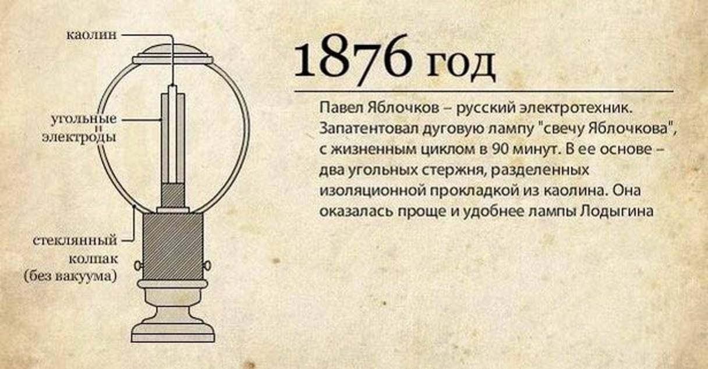
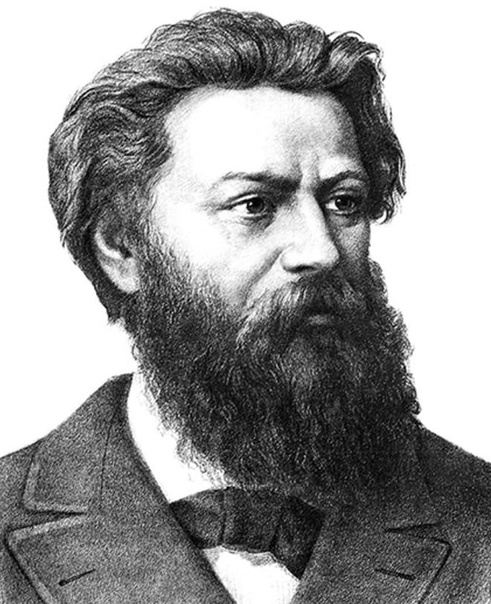

Па́вел Никола́евич Я́блочков (2 сентября 1847, Сердобск, Саратовская губерния — 19 марта 1894, Саратов) — русский электротехник, военный инженер, изобретатель и предприниматель. Известен разработкой дуговой лампы (вошедшей в историю под названием «свеча Яблочкова») и другими изобретениями в области электротехники.

Земля российская всегда славилась своими изобретателями и мастерами. Именно их стараниями приобретала она свою мощь и вес в мире. Среди выдающихся людей России особое место занимает Павел Яблочков, стоявший у истоков электротехники. Он создал дуговую лампу и первый в мире электрический трансформатор переменного тока. Его изобретения помогли России стать родиной электричества – именно так ее называли в 19-м веке.

ПРОДОЛЖЕНИЕ СЛЕДУЕТ!!! (КЛИК)